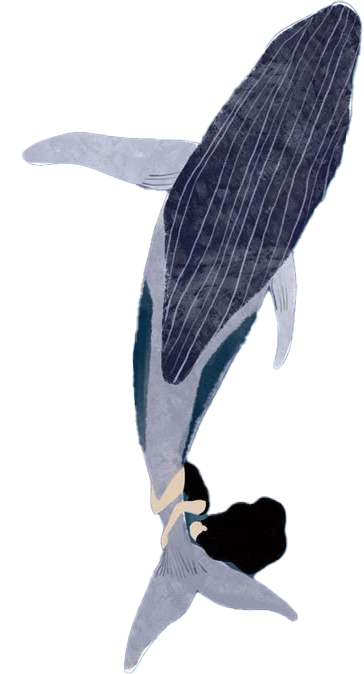
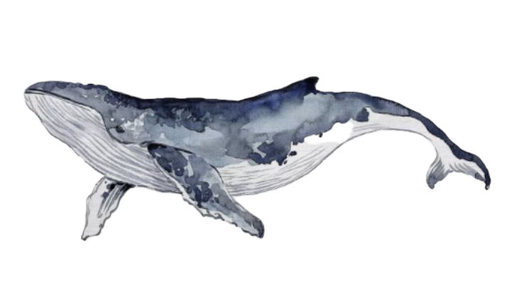

Ocean&People Что нам известно? Люди и Океан Вывод

Как люди связаны с океаном?

Ocean&People Что нам известно? Люди и Океан Вывод

Океан покрывает более 70% поверхности Земли и представляет собой крупнейшую экосистему планеты. Его глубины остаются в значительной степени неизученными: по оценкам ученых, человечество исследовало лишь малую часть океанского дна. Это делает океан одним из последних рубежей для научных открытий.
Одной из ключевых особенностей океана являются течения — мощные потоки воды, движущиеся на огромные расстояния. Они действуют как глобальная система распределения тепла. Например, течение Гольфстрим переносит теплые воды из тропиков в северные широты, смягчая климат в Европе и влияя на погодные условия в Северной Америке.
Океанская экосистема невероятно разнообразна. В ней обитают миллионы видов — от микроскопических бактерий и планктона до огромных млекопитающих, таких как киты. Особый интерес представляют глубоководные зоны, где в условиях полной темноты и высокого давления существуют уникальные формы жизни, приспособленные к экстремальной среде.
Кроме биологического разнообразия, океан играет важную роль в регулировании климата. Он поглощает значительное количество углекислого газа, снижая тем самым скорость глобального потепления. Также океан аккумулирует тепло, действуя как своеобразный «буфер», сглаживающий резкие температурные колебания на планете.


На протяжении всей истории человечества океан был источником вдохновения, выживания и развития.
Многие древние цивилизации возникали вдоль морских побережий, где были доступны пищевые ресурсы и торговые пути. Со временем люди научились использовать океан не только как источник пропитания, но и как средство связи между разными частями мира.Полинезийские мореплаватели считаются одними из величайших навигаторов в истории. Они путешествовали на огромные расстояния по открытому океану, ориентируясь по звездам, течениям, цвету воды и поведению птиц. Их знания передавались из поколения в поколение и позволили заселить множество островов Тихого океана.
В Японии море является неотъемлемой частью культуры. Рыболовство и потребление морепродуктов сформировали традиционную кухню, а такие практики, как выращивание жемчуга, стали символом мастерства и гармонии с природой. Морская тематика также широко представлена в искусстве и религиозных верованиях.
В Скандинавии эпоха викингов продемонстрировала, насколько океан может быть важен для расширения горизонтов человека и его культуры. Морские путешествия позволили им открывать новые земли, налаживать торговлю и культурные связи. Их корабли и навыки навигации стали символом силы и изобретательности.
Океан — это не просто огромный водный массив, а сложная, взаимосвязанная система, от которой зависит жизнь на Земле. Он регулирует климат, поддерживает биологическое разнообразие и обеспечивает человечество ресурсами. Его влияние распространяется далеко за пределы побережий, затрагивая даже самые удаленные уголки суши.
В то же время океан остается уязвимым. Загрязнение, изменение климата, чрезмерный вылов рыбы и разрушение экосистем представляют серьезную угрозу его здоровью. Сохранение океана требует совместных усилий на глобальном уровне — от международных соглашений до повседневных действий каждого человека.
В то же время океан остается уязвимым. Загрязнение, изменение климата, чрезмерный вылов рыбы и разрушение экосистем представляют серьезную угрозу его здоровью. Сохранение океана требует совместных усилий на глобальном уровне — от международных соглашений до повседневных действий каждого человека.